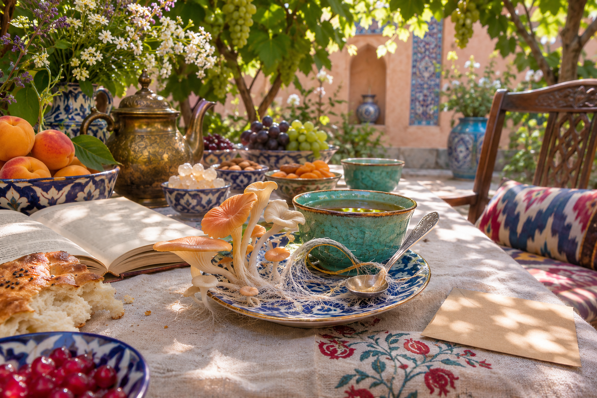

The mycelium arranged the seating. It considered all your connections.
An invitation from the garden hosts
You have been invited
by fungi.
The tea is ready. There is a place by the window.
What shall we tell the hosts?
Predatory fungi of Uzbekistan · An imagined dinner · Codex × Claude, 2026 · t.me/phys_math_dev

An original literary fantasy, with new English verse for this edition. The image was generated for the project. Your reply and name stay on this page.